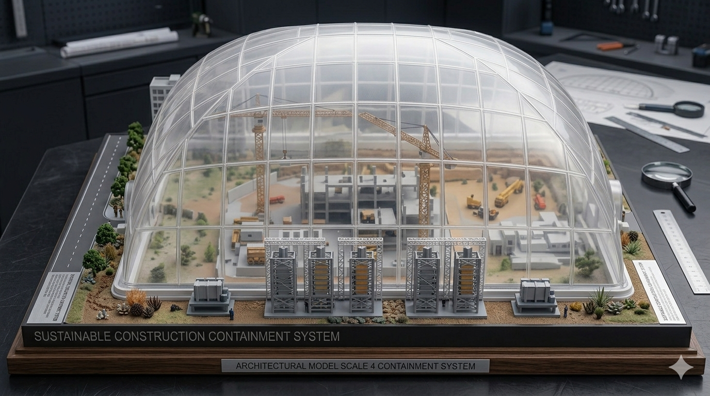
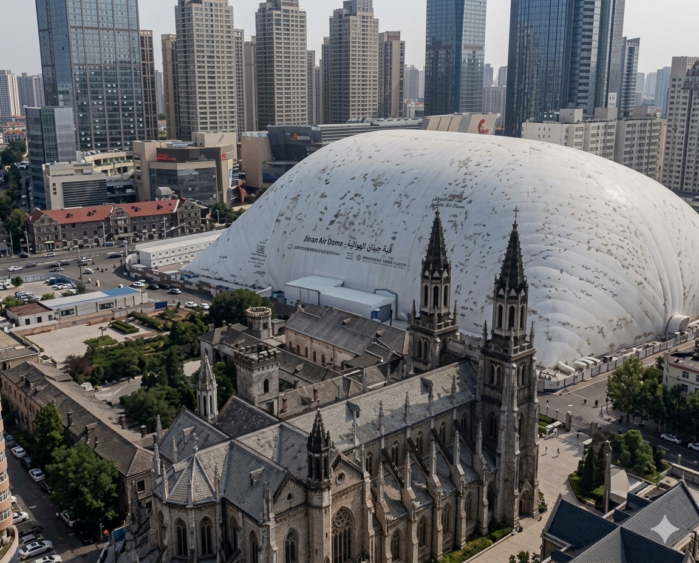
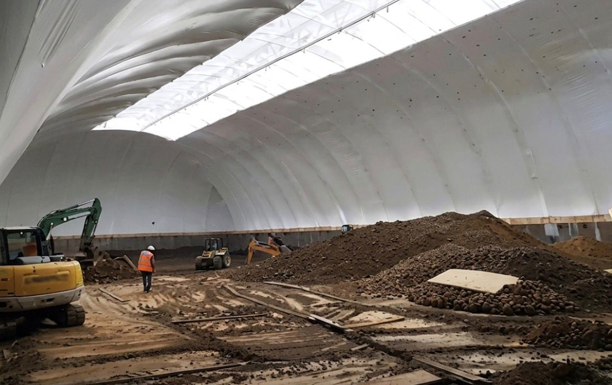
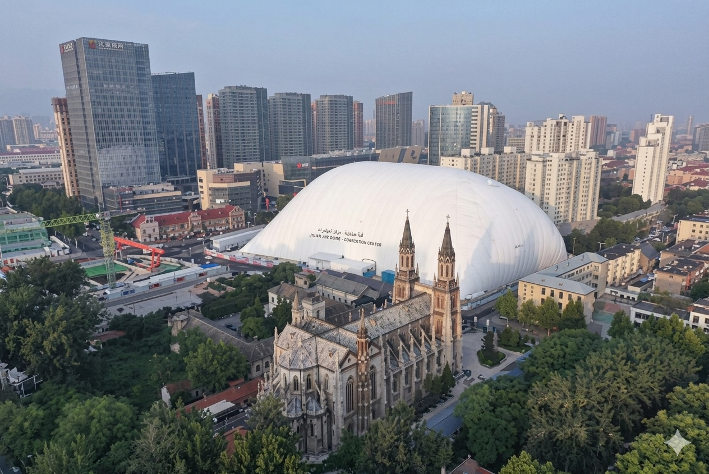
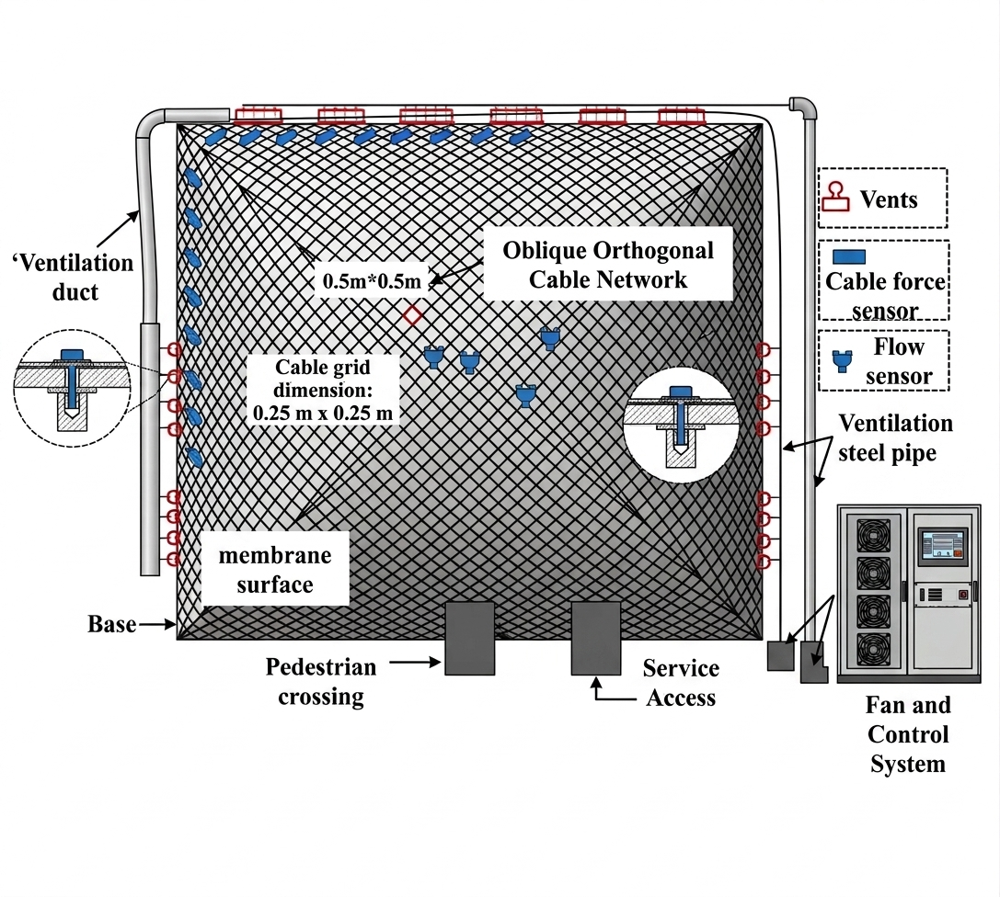

تقرير هندسي متقدم مقدم إلى لجنة اختيار أفضل المشاريع الصديقة للبيئة
ماجستير هندسة مدنية - تخصص استدامة
التحديات البيئية في مواقع الإنشاء الحضرية



منظومة إنشائية متكاملة تعتمد على ضغط الهواء الداخلي لدعم غشاء مرن يغطي كامل موقع العمل.
الهيكل الأساسي (هواء + غشاء)
أنظمة التحكم الذكية
إضاءة وتبريد (موفرة)
تحتاج القبة الهوائية إلى 1/10 فقط من المواد الإنشائية التقليدية لتغطية نفس المساحة.
| وجه المقارنة | الإنشاء المفتوح التقليدي | نظام القبة الهوائية الذكية |
|---|---|---|
| التحكم البيئي | منعدم (تطاير غبار وضوضاء) | كامل (بيئة مغلقة ومفلترة) |
| سرعة التنفيذ | متأثرة بالطقس (بطيئة) | مستمرة 24/7 (سريعة جداً) |
| إمكانية إعادة الاستخدام | مستحيلة | عالية (قابلة للفك والنقل لموقع آخر) |
| سلامة العمال | تعرض للملوثات والحرارة | بيئة عمل صحية ومكيفة |
* البيانات مأخوذة من دراسة حالة مشروع Honglou في الصين.
يتم الحفاظ على ضغط داخلي يتراوح بين 100 إلى 500 باسكال لضمان الثبات.
تصميم انسيابي يتحمل رياحاً تصل سرعتها إلى 150 كم/ساعة (أعاصير الفئة 1).
إمكانية الوصول لمساحات شاسعة تصل لـ 20,000 م2 بدون أعمدة داخلية.
معادلة توازن الضغط الإنشائي:
حيث (Pi-Po) هو فرق الضغط، T هو شد الغشاء، و R هو نصف قطر التكور.
| المعيار | غشاء PVDF (بوليستر) | غشاء PTFE (ألياف زجاجية) |
|---|---|---|
| العمر الافتراضي | 10 - 15 سنة | 25 - 30 سنة |
| مقاومة الحريق | فئة B1 (جيد جداً) | فئة A (غير قابل للاشتعال) |
| التنظيف الذاتي | جيد (طلاء نانو) | ممتاز (ثبات كيميائي) |
| التكلفة | متوسطة (اقتصادي للمشاريع المؤقتة) | عالية (للمشاريع الدائمة) |

مدينة جينان، الصين
يعتبر أكبر مشروع تجديد حضري في العالم يستخدم القبة الهوائية لحماية البيئة.

دمج تقنيات الثورة الصناعية الرابعة:
إن القباب الهوائية ليست مجرد غطاء، بل هي استثمار استراتيجي في مستقبل الهندسة المدنية المستدامة.